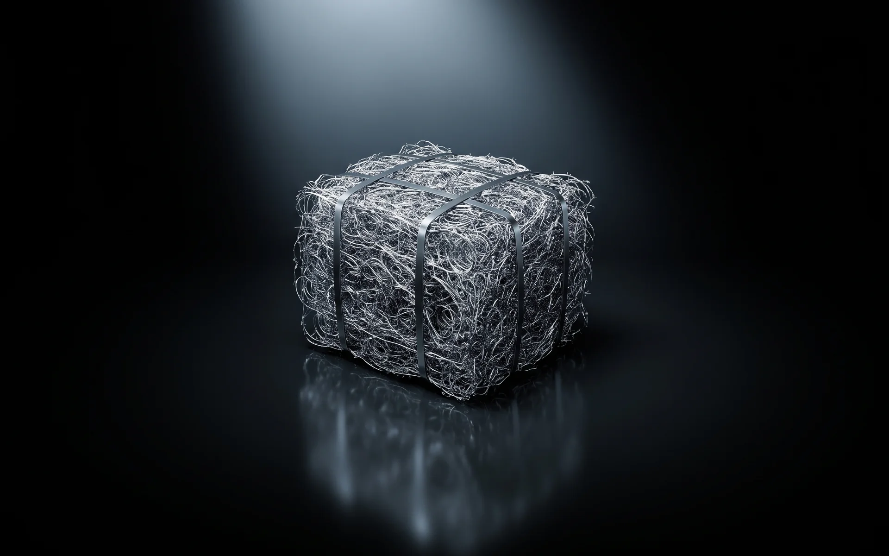
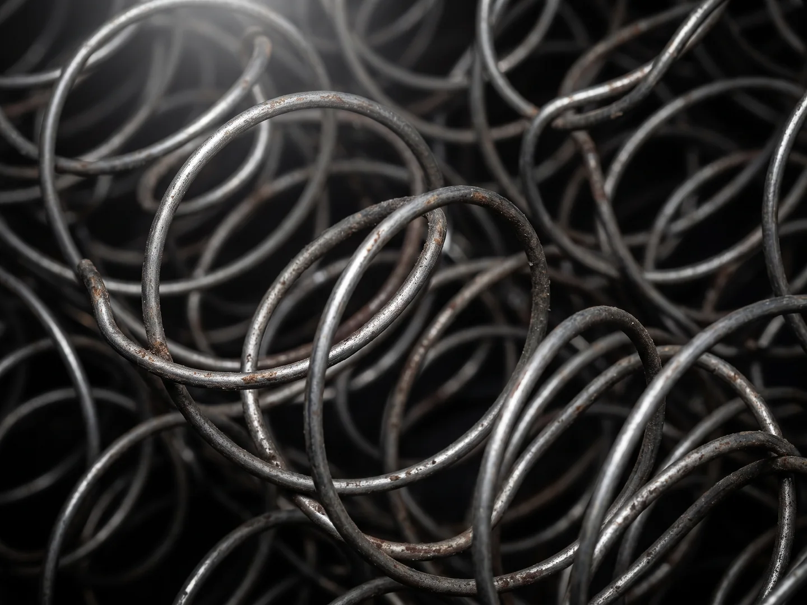
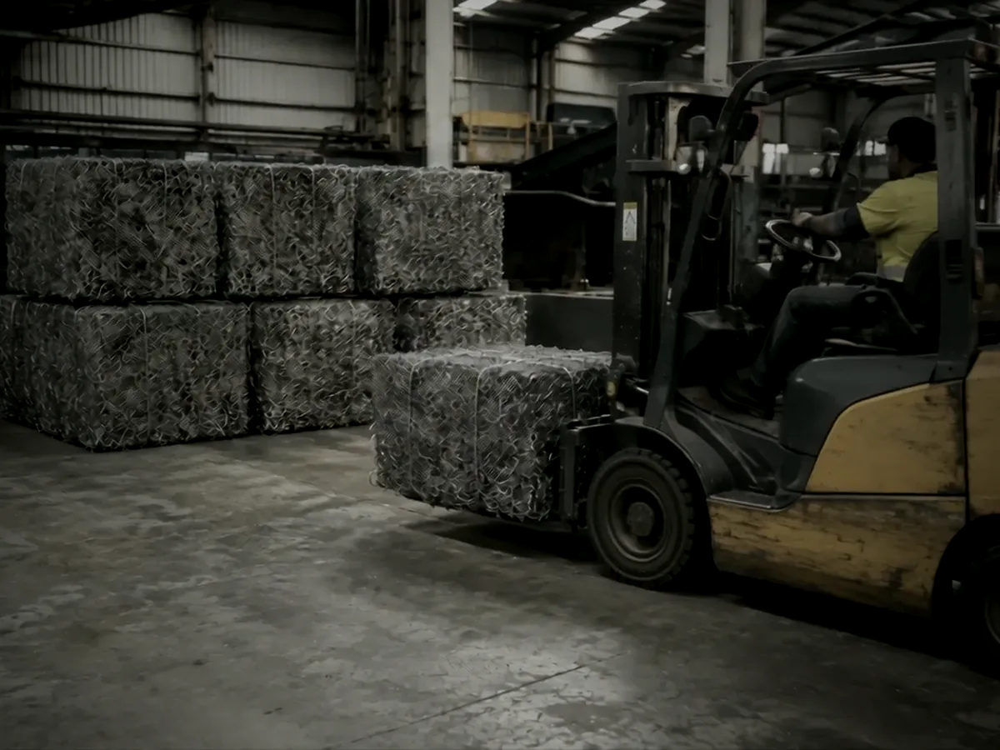
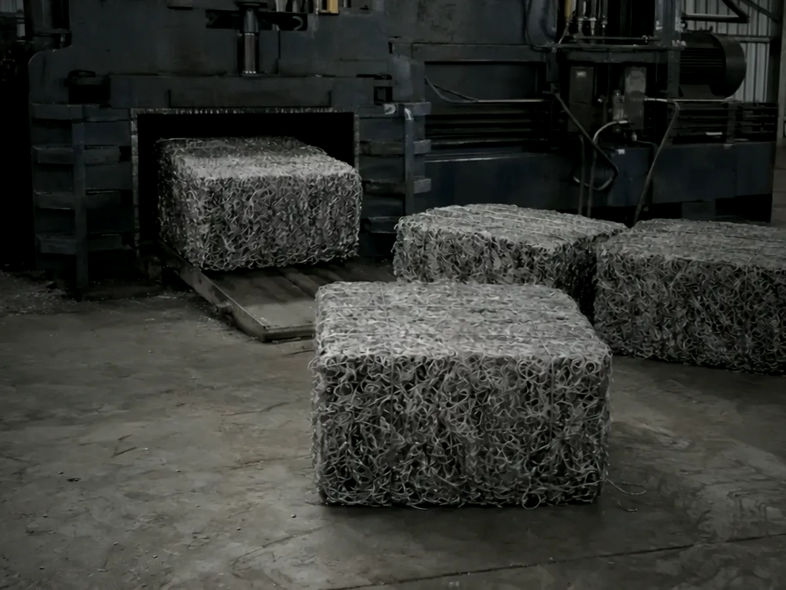
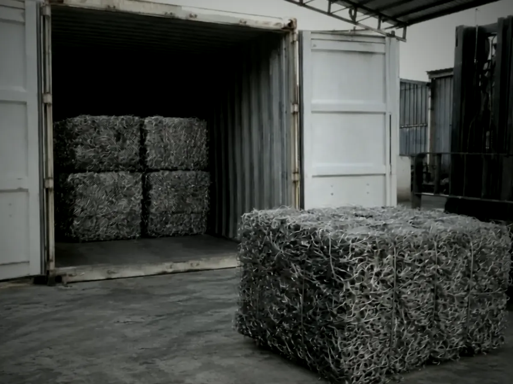

Recycled steel
Processed high-tensile spring steel
Recovered from mattress spring units at our facility in Victoria, separated from fabric and foam, and supplied loose or baled. A clean, consistent ferrous product from a single known source.
The material
What you are buying
Mattress springs are made from high-carbon, high-tensile steel wire. Around 30% of every mattress by weight is steel, and until recently almost all of it went to landfill inside the mattress.
Recycle Group built the plant to change that. Every mattress that enters the facility is shredded, and the steel is pulled out by magnets, then cleaned of fabric, foam and fibre by vibration, high-volume suction and an electrostatic fibre separator. What comes off the line is a tangle of clean spring steel, around 99% ferrous, ready to be baled or loaded loose.
Because the input is one product, the output is one product. You are not buying a mixed yard grade; you are buying spring steel, every time.

Specification
Product summary
Figures below describe the product as it leaves our line. We supply a physical sample before any commercial commitment so you can assess it against your own requirements.
| Material | Processed high-tensile / high-carbon spring steel scrap, recovered from mattress spring units |
|---|---|
| Ferrous content | Approximately 99% |
| Contamination | Around 99% free of fabric, foam and other non-metal material after magnetic, vibration, suction and electrostatic separation |
| Form | Loose (bulk) or baled. Bale dimensions vary with the press cycle, confirmed per order |
| Origin | Recovered and processed at the Recycle Group facility, North Geelong, Victoria, Australia |
| Production | 6–10 tonnes per day, year-round |
| Availability | Typically 130–250 tonnes per month |
| Supply | Road or rail freight within Australia; containerised at our site for export |
| Samples | Available on request |
Forms of supply
Loose or baled, your call

Loose
Bulk loose steel loaded directly into bins, tipper bodies or open-top containers. The simplest option for buyers with their own handling and shredding.

Baled
Compressed bales that stack, forklift and containerise cleanly. The usual choice for export and for buyers who want dense, easily counted loads.




Why it matters
Recycled steel is the same steel
Steel can be remelted indefinitely without losing its properties. Every tonne of spring steel we supply displaces a tonne of virgin material at the mill, and keeps a tonne of steel out of landfill inside a mattress.
For manufacturers, that is recycled content you can point to with a known Australian origin. For mills and traders, it is a clean, single-grade feedstock with a volume you can plan around.
Request a sampleTalk to us about steel
Tell us your grade requirements, location and monthly volume. We will confirm availability and send a sample.